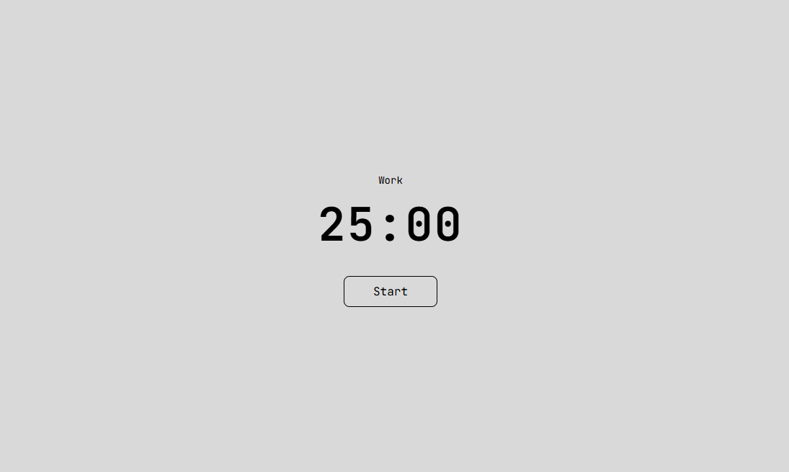

Une application Pomodoro épurée en noir et blanc. Lancez votre chronomètre, personnalisez votre sonnerie, et restez concentré sur ce qui compte vraiment.
Téléchargement gratuit
⚠️ Instructions pour les utilisateurs Mac
Si un message indique que l'application est endommagée après l'installation, suivez ces étapes :
1. Ouvrez le Terminal (Applications > Utilitaires > Terminal)
2. Copiez et exécutez cette commande :
xattr -rd com.apple.quarantine /Applications/Focusy.app
Cliquez sur la commande pour la copier
3. Appuyez sur Entrée et relancez l'application

Chronomètre simple
Lancez et arrêtez votre session de travail en un clic
Sonnerie personnalisable
Choisissez la sonnerie qui vous convient le mieux
Design minimaliste
Interface noir et blanc pour une concentration maximale